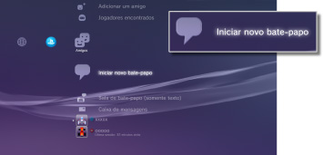
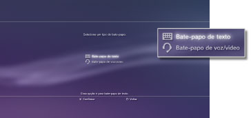
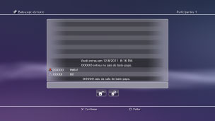
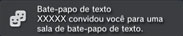

Amigos > Bate-papo de texto > Iniciando ou saindo do bate-papo de texto
Iniciando ou saindo do bate-papo de texto
Para utilizar este recurso, pode ser necessário atualizar o software de sistema.
Você pode utilizar o bate-papo de texto com as pessoas em sua lista de Amigos.
Iniciando o bate-papo de texto
1. |
Selecione |
|---|---|
|
 |
|
2. |
Selecione |
|
 |
|
3. |
Digite um nome para a sala de bate-papo de texto e, depois, selecione [OK]. |
4. |
Selecione os Amigos que você deseja convidar para o bate-papo e, depois, selecione [OK]. |
|
 |
 (Iniciar novo bate-papo).
(Iniciar novo bate-papo). (Bate-papo de texto).
(Bate-papo de texto).Dicas
- Você deve iniciar a sessão na PSNSM para participar do bate-papo de texto.
- Uma mensagem de convite para bate-papo não é enviada para o bate-papo de texto.
- Até 16 pessoas podem participar em uma sala de bate-papo de texto.
- O recurso de bate-papo de texto não poderá ser usado se limites em seu uso forem definidos. Para obter informações sobre as configurações do controle parental, veja [Sobre o menu XMB™] > [Utilizando as configurações de controle parental] neste guia.
Participando em uma sala de bate-papo de texto
Se você for convidado para um bate-papo de texto, uma mensagem de notificação será exibida no canto superior direito da tela. Selecione  (Sala de bate-papo (somente texto)) em
(Sala de bate-papo (somente texto)) em  (Amigos), depois selecione a sala de bate-papo à qual você deseja reunir-se.
(Amigos), depois selecione a sala de bate-papo à qual você deseja reunir-se.

Dicas
- Se [Não mostrar] estiver definido em [Mensagens de notificação] em
 (Configurações) >
(Configurações) >  (Configurações do sistema), as mensagens de notificação não serão exibidas.
(Configurações do sistema), as mensagens de notificação não serão exibidas. - Na maioria dos jogos, você pode participar de um bate-papo de texto durante o jogo. Pressione o botão PS no controle sem fio e, depois, selecione a sala de bate-papo da qual deseja participar em (Amigos) > (Sala de bate-papo (somente texto)). Pressione o botão PS para voltar para a tela do jogo.
- Você pode participar de até três salas de bate-papo ao mesmo tempo. Se você entrar em uma quarta sala de bate-papo, sairá automaticamente da primeira sala que entrou.
- Até 20 salas de bate-papo podem ser exibidas em (Sala de bate-papo (somente texto)). Quando houver mais de 20 salas de bate-papo, as salas mais antigas serão excluídas automaticamente quando novas salas forem abertas.
Saindo de uma sala de bate-papo
Pressione o botão  para fechar a tela do bate-papo de texto. Selecione a sala de bate-papo da qual deseja sair, pressione o botão
para fechar a tela do bate-papo de texto. Selecione a sala de bate-papo da qual deseja sair, pressione o botão  e, depois, selecione [Sair] no menu de opções.
e, depois, selecione [Sair] no menu de opções.
Dica
Se você desligar o sistema PS3™ ou finalizar a sessão da PSNSM, sairá automaticamente da sala de bate-papo. Se você entrar em uma sala de bate-papo novamente depois de sair dela, o registro das entradas de bate-papo enviadas enquanto você estava fora não será exibido.
Excluindo uma sala de bate-papo
Selecione a sala de bate-papo que você deseja excluir, pressione o botão e, depois, selecione [Excluir] no menu de opções.
Utilizando o painel de controle
Você pode realizar as seguintes operações usando o painel de controle na tela do bate-papo de texto.
 |
Convidar um amigo | Convida um amigo para entrar em uma sala de bate-papo de texto |
|---|---|---|
 |
Lista de participantes | Exibe uma lista das pessoas que estão participando na sala de bate-papo |